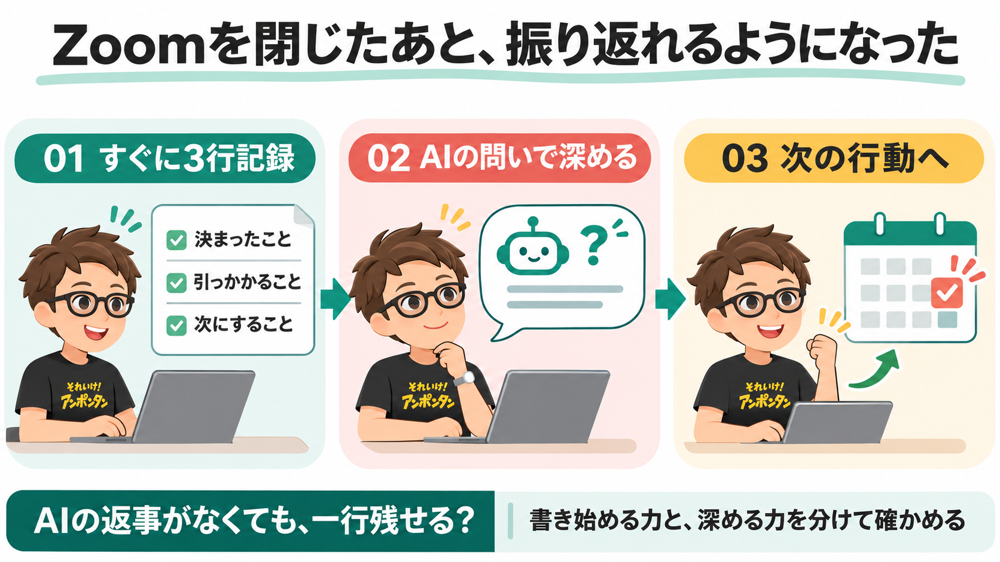

THOUGHT DEBUG / 2026.11.16
Zoomを閉じたあと、振り返れるようになった
打ち合わせの直後、気づけば記録と振り返りの時間を取っている。以前の僕なら、後回しにしていたのに。
Zoomでの打ち合わせが終わった直後、記録したり振り返ったりする時間を無意識に取っていた。AIのレスポンスがあるから、できるようになったのだろうか。
「あとで」が、いつの間にか「いま」に
打ち合わせが終わると、話したことも感じたこともまだ手元にある。そのうち書こうと思っても、時間がたつと輪郭がぼやける。以前は、記録しないまま次の作業に移ることもあった。
最近はZoomを閉じたあと、自然に振り返りへ向かっている。何かを決意した覚えはないのに、行動だけが少し変わった。
返事があると、独り言で終わらない
AIに話せば、整理された言葉や問いが返ってくる。ただ記録を置いて終わるのではなく、話した内容の続きを受け取れる。この「返事がある」という期待が、振り返りの最初の一歩を軽くしているのかもしれない。
僕にとってAIは、記録を代わりにする道具というより、振り返りを会話に変える相手になっている。
思考のデバッガーからの突っ込み
でも「AIのおかげ」で全部説明してしまうのは、少し早い。会議直後だから記憶が鮮やかなのかもしれないし、話したことを残したい相手や目的がはっきりしたのかもしれない。AIが拍手係をしてくれるから動ける、と決めつけるには、まだ材料が足りない。
もしAIがすぐ返事をくれない日でも、打ち合わせのあとに一行だけ残せるだろうか。
そこを確かめると、続ける力の正体がもう少し見えてきそうだ。
次の打ち合わせで、ひとつ試す
Zoomを閉じたら、まず「決まったこと」「まだ引っかかること」「次にすること」を一行ずつ残す。そのあとAIに渡して、返ってきた問いで何が深まったかを見る。
書き始める力と、考えを深める力。どちらをAIが助けてくれているのか、分けて観察してみたい。
一段深掘りする問い
僕が続けたいのは「AIから返事をもらうこと」だろうか。それとも「打ち合わせで生まれた気づきを、次の行動に渡すこと」だろうか？
図解

他者紹介用メモ
打ち合わせの記録を「あとで」と思って、そのまま忘れてしまうことはありませんか。僕は最近、Zoomを閉じた直後に自然と振り返れるようになりました。AIから返事が来るからかもしれない。でも、それだけで説明できるでしょうか。会議直後の記憶の鮮度と、AIとの対話がそれぞれ何を助けているのか、次の打ち合わせで確かめます。